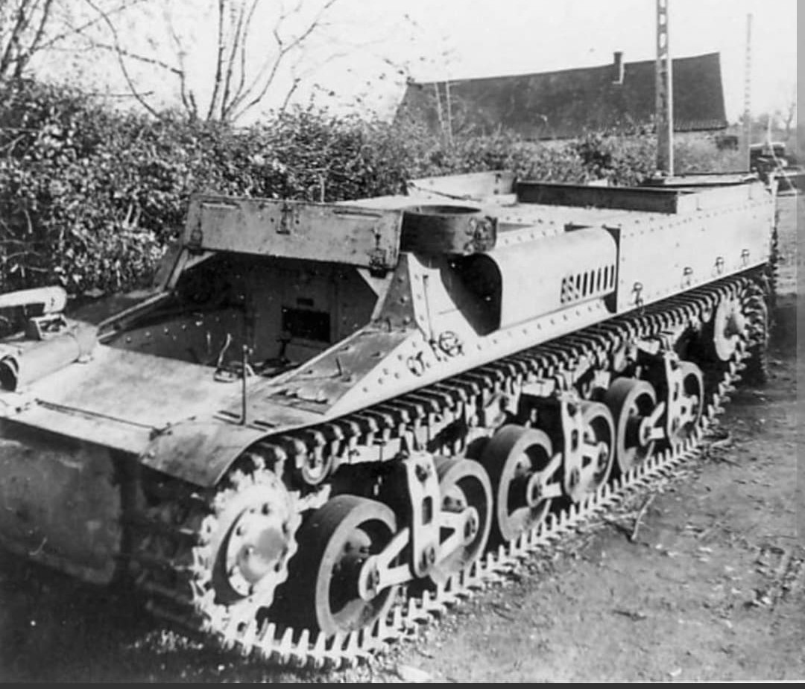
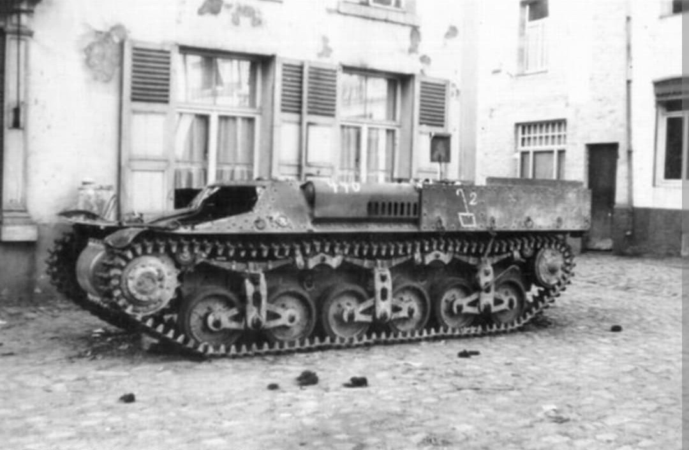
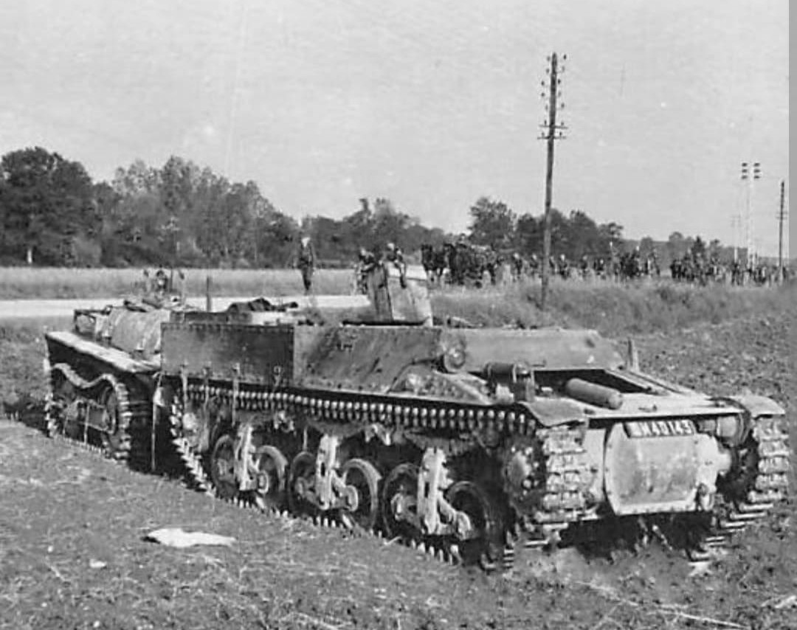

La chenillette de ravitaillement blindée de l'Armée française en 1940

Le Tracteur de ravitaillement pour chars Lorraine 37L (officiellement *Tracteur d'infanterie Type 37L*) est un véhicule chenillé blindé développé à la fin des années 1930 pour répondre aux besoins logistiques des unités mécanisées de l'Armée de Terre française.
Conçu pour ravitailler en essence et munitions les unités de chars de combat directement sur la ligne de feu, il se distinguait par sa remorque blindée sur chenilles et ses excellentes capacités franchisseuses.
Développé par la société **Lorraine-Dietrich** en 1937, le véhicule repose sur un châssis particulièrement réussi doté d'une suspension efficace à bogies et chenilles en acier. D'une masse de **6 tonnes**, il est propulsé par un moteur Delaunay-Belleville 6 cylindres de 70 ch lui permettant d'atteindre environ 35 km/h.
Non armé à l'origine, le Lorraine 37L transporte sa charge utile dans une cuve blindée arrière et tracte une remorque chenillée blindée de 800 kg réservée au carburant (cuve de 565 litres) ou aux munitions.

Lors de la **Bataille de France** en mai-juin 1940, environ 480 exemplaires sont engagés au sein des Divisions Cuirassées (DCR) et des Divisions Légères Mécaniques (DLM). Malgré leurs qualités, beaucoup sont abandonnés ou détruits sous le feu adverse.
Après la capitulation française, la Wehrmacht capture plus de 300 chenillettes. Impressionnés par la fiabilité du châssis, les Allemands reconvertissent massivement le véhicule sous l'appellation Lorraine Schlepper 630(f), notamment en chasseurs de chars (**Marder I**) et en canons automoteurs (10,5 cm ou 15 cm sFH 13/1) très largement utilisés en Afrique du Nord, en URSS et en Normandie.

Page du Musée HOP WW2 – Section Véhicules Terrestres Français